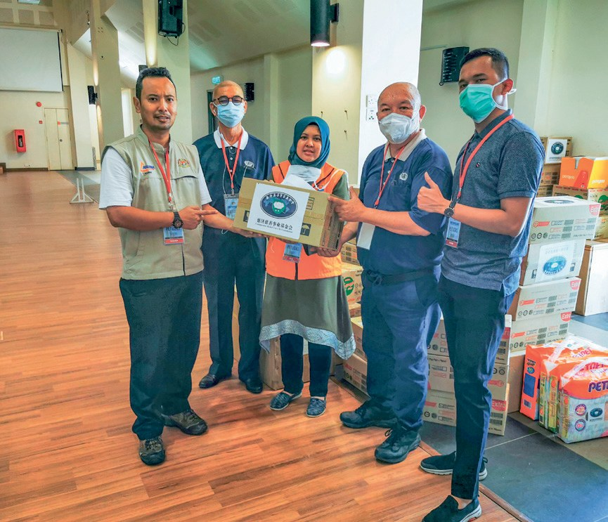
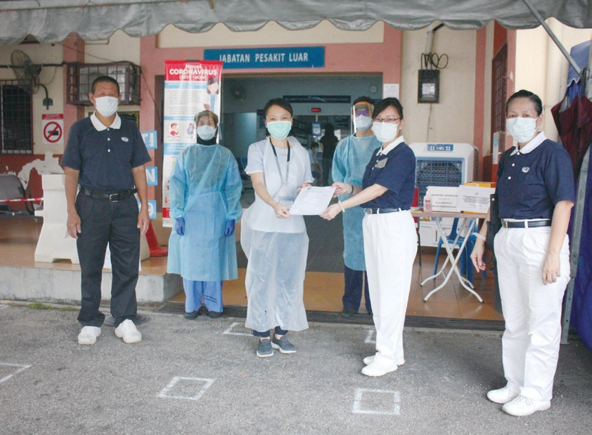
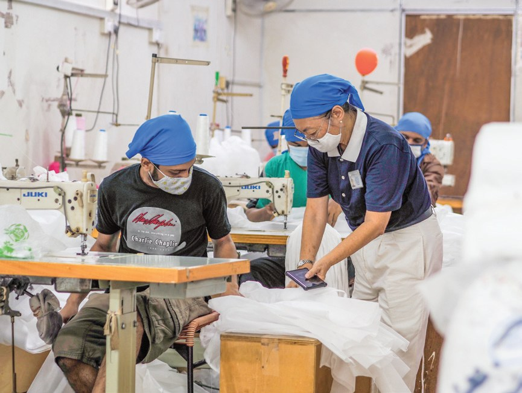
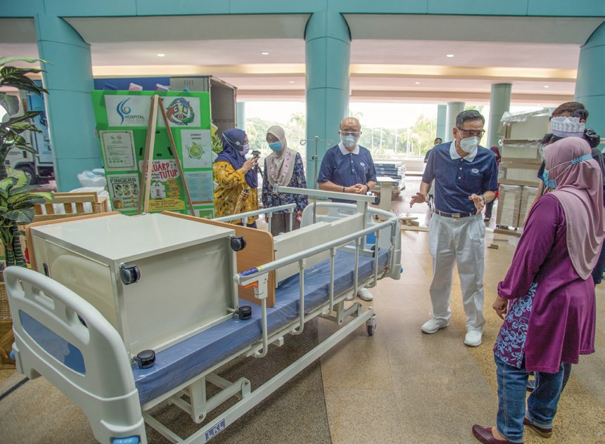
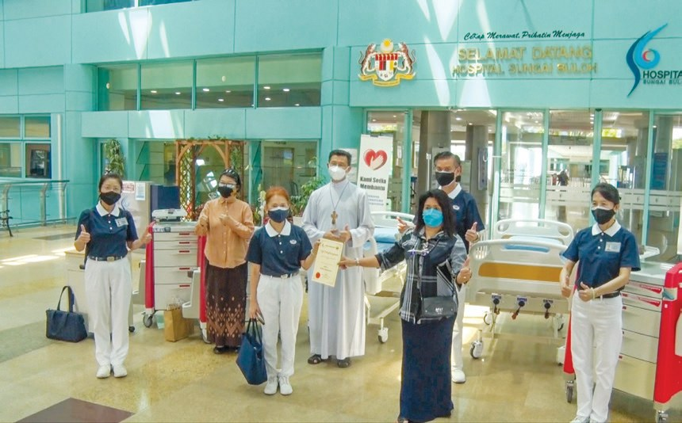
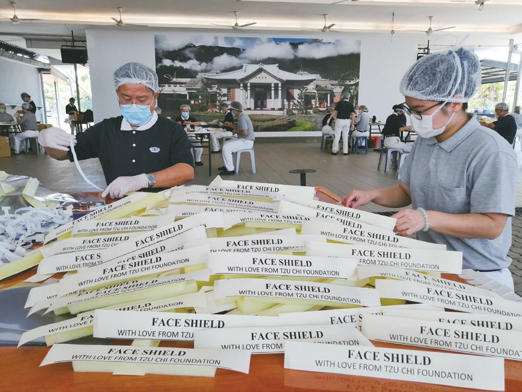
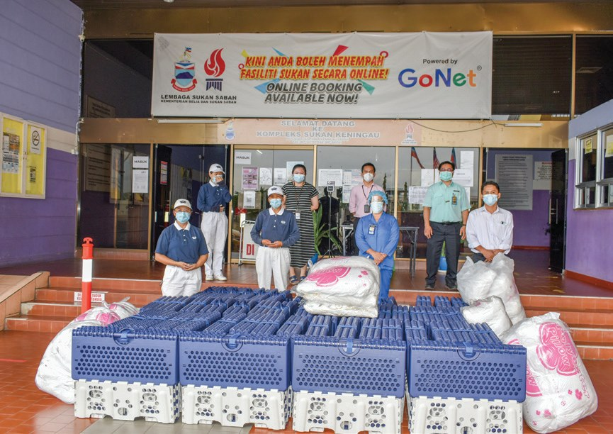
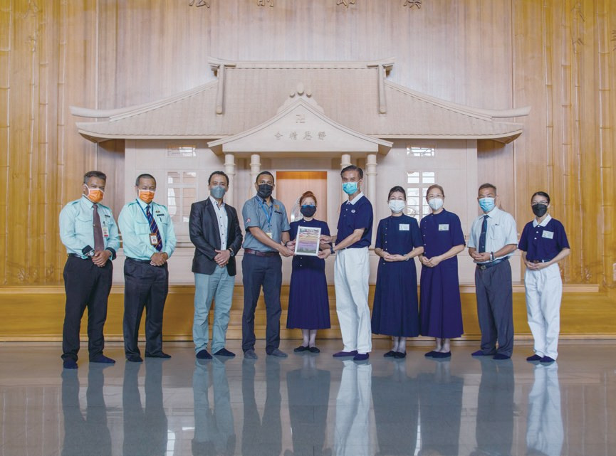
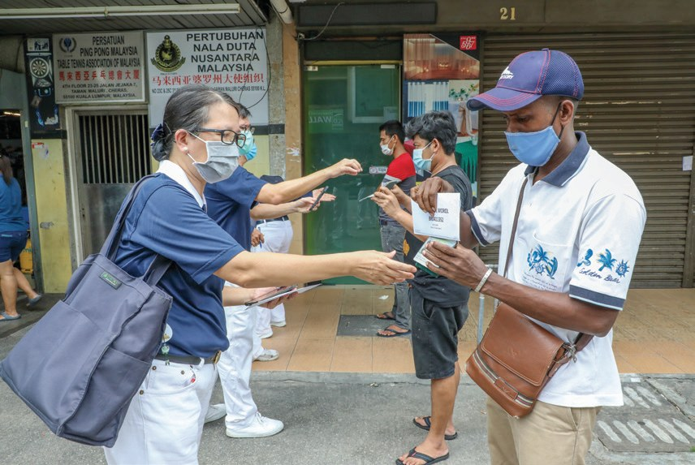
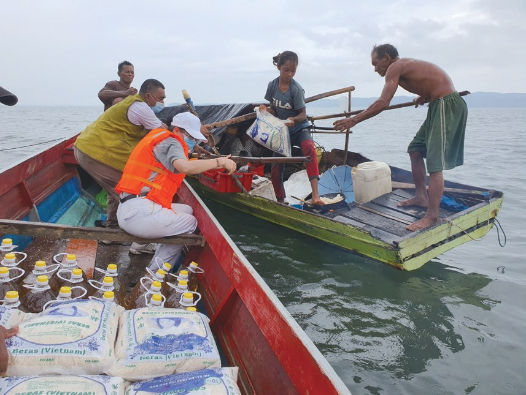

靈方妙藥
大哉教育（上）
疫情來了，人人都要待在家，志工還能做什麼？

先別急著下結論，讀完再說說你的想法～
這一篇講2020年的新冠疫情。上篇從防疫物資開始：志工在靜思堂做面罩、製衣廠趕做隔離衣，再到全國眾籌，為醫院送去病床和器材。
最後，你會看到沒有身分的外籍勞工、難民和水上人家，怎樣在封鎖中等到援助。
下面是原書的節錄，紅色底線是我們替你標出的轉折點。
讀之前：疫情最嚴重時，你覺得醫院最缺什麼？
一天用掉一千個面罩
管制令第一天，志工在靜思堂做什麼？閱讀引導
2月27日，吉隆坡的宗教活動造成大規模群聚感染，大馬政府啟動防疫政策，開始了漫長的疫情生活。
「各國慈濟人要在遵守防疫措施下動員救災，同時戒慎虔誠，祈求疫情早日平息。」
證嚴上人慈示・p.249
截至2月27日，運送物資達21趟航班，總重量近五十公噸。

近五十公噸！
2020年3月，負責新冠病毒治療中心的雙溪毛糯醫院向雪隆分會表示，疫情期間，醫院一天就要用掉1,000個防護面罩……

面罩從哪裡來？
3月18日，國家實施管制令的第一天，雪隆分會動員志工於吉隆坡靜思堂啟動製作醫護防護面罩，支援前線的醫療人員……
「為了對抗疫情，醫護人員已經人手不足了，為了讓他們能夠專心在前線救人，我們要做他們的後盾。」
志工葉淑嬰表示・p.251
「謝謝慈濟在很困難的時刻幫助我們，大家應該不分種族、不分宗教，團結在一起，打敗COVID-19。」
萬撓轟埠診所曾麗菁醫師說・p.251
不分宗教。
慈濟中南馬及東馬據點也紛紛啟動製作，截至2022年，累計數量超過十八萬個。

「聽到慈濟尋找製衣廠做隔離衣，我根本沒有考慮，就直接答應接下。前線人員用生命付出，我們就在後面支持他們，大家一起來度過難關。」
與丈夫打理製衣廠三十年的林雁暖說・p.252在製衣廠努力趕製及志工後勤補給下，截止2022年，雪隆慈濟製作了近五十萬個頭套、隔離靴和隔離衣。
一件件做出來！
把善款用在刀口上
病例兩星期翻倍，醫院撐得住嗎？閱讀引導
2021年5月底，馬來西亞新冠病毒單日確診病例，短短兩個星期翻倍成長高達逾八千宗，促使全國醫療體系量能吃緊。
醫院撐得住嗎？

2021年6月，雪隆分會發起「馬來西亞COVID-19眾籌基金」專案募款……
6月23日，政府將安邦醫院轉為專治新冠患者的醫院，該院收治的病患一度暴升到七百人，面臨病床不足的情況，因而向慈濟請求援助。
病床不夠了！

二、慈濟清楚掌握院方需求，把善款用在刀口上；三、慈濟最重要的考量，是以生命為重。
醫生說的「慈濟模式」・p.255「慈濟會不斷跟我們溝通，他們以生命為重，考量的不是價格，而是要最有效的醫療配備，這是很多團體沒有辦法跨越的障礙。」
安邦醫院翁詩鑽醫師說・p.255
看哪樣最有效。
除了病床告急，醫院的冰櫃及屍袋也出現短缺現象。吉隆坡中央醫院求援慈濟，慈濟協助採購首批500個屍袋給院方。
疫情真的好嚴重。
7月4日雪隆分會獲悉吉隆坡有8個低收入群體居住的人民組屋區，因為封鎖管制造成2,450位的住戶缺糧。

志工在短短3天內籌備，於29日凌晨從亞庇出發，近九個小時的陸、海交通，運送160組床褥與枕頭，以及借出41臺大型立扇送抵納閩隔離中心。
九個小時送到島上！

「病情嚴重的患者需要呼吸器，會在醫院進行深切治療；另一些輕微無症狀的病患，就安排他們到體育館去隔離，那裡沒有病床，幸好有慈濟的福慧床為我們解決問題。」
斗湖中央醫院阿茲曼依布拉欣副院長說・p.258猜一猜閱讀引導
到2022年1月，雪隆慈濟一共支援了全馬多少個政府與私人單位？
- 1,714個政府與私人單位p.259
- 94家醫院p.259
- 1,089家一般診所p.259

慈濟雪隆分會為百位受獎者中唯一的佛教團體代表。
政府只幫公民
外籍勞工、難民、水上人家，封鎖時誰來幫？閱讀引導
議員茜蒂瑪麗亞向志工表示，政府僅為公民提供援助，非公民只能尋找非政府單位的支援。
就沒有補助……
於4月17日，發放現金券予112戶，同時亦供應安心包，紓解外籍勞工的生活壓力。
為減低感染風險，志工以電訪取代家訪，填寫難民署提供的評估表，再依據家庭狀況，評估發放180至600令吉不等的一次性補助。

發放現金券對受惠者而言是及時雨，大部分難民能以現金券到鄰近的連鎖超市，購買需要的食物與生活用品等。
至2021年12月，慈濟動員志工79,323人次，嘉惠17,846戶、61,110人次的難民。
幫了一萬七千多戶！
然而，通往拿篤的主要路段遭封鎖，村民們又多數沒有電話，志工無法進行家訪確認身分。
甘榜亞逸水上村的發放，志工發現村民必須扛著十公斤的白米和食油走過獨木橋，因此協調租用小船，逐戶載運，讓村民免去搬物資的不便。
用小船一戶戶送。
甘榜班吉的發放，志工則安排了3艘小船，載送物資出海發放，但卻遇到退潮，船不能靠岸，有幸得到一位地主允許志工從他的私人地進村。

甘榜狄丁岸居民的居住密集，是屬於高風險染疫區之一，他們沒有合法身分而無法得到政府補助。11月22日，志工穿著全套防護衣，走入村裡發放逾三十四噸生活物資，援助760戶無國籍人士。
停一停：誰讓你記住了？閱讀引導
選一位你印象最深的人。沒有標準答案。
有人做面罩，有人接下隔離衣，有人租小船送米。哪一位讓你最有感覺？

一起回頭看看吧～
回望
依本章原文整理，每一條都標了原書頁碼。閱讀引導
背後原因
為什麼要眾籌補醫院

小川醫院不是有政府管嗎？
- 物資缺口
市面上防護面罩無法即時供需。p.251
- 病例翻倍
兩個星期翻倍成長，全國醫療體系量能吃緊。p.253
- 眾籌基金
聯合18個宗教團體，捐贈醫療器材與設備。p.254
後續發展
疫情援助一路走來

小禾從第一批物資到頒獎，經過了多久？
- 2020.2
首批物資送至中國湖北。p.249
- 2020.3
管制令第一天，靜思堂開始做面罩。p.251
- 2020.4
與UNHCR合作，補助難民家庭。p.261
- 2020.11
穿全套防護衣進甘榜狄丁岸發放。p.263
- 2021.6
發起「馬來西亞COVID-19眾籌基金」。p.254
- 2021.9
士拉央醫院頒獎，慈濟是唯一佛教團體。p.259
沒有身分的人
困難和辦法
小川志工怎樣一關一關過？
- 非公民得不到政府援助依名單發放現金券予112戶p.260
- 疫情中不能家訪以電訪取代家訪p.261
- 村民扛米走獨木橋租用小船，逐戶載運p.262
- 退潮船不能靠岸地主允許從私人地進村p.262
以上只整理本章寫到的事；書裡沒寫到的，我們不替它下結論。
回頭看讀前的選擇閱讀引導
雙溪毛糯醫院一天就要用掉1,000個防護面罩（p.250）；安邦醫院面臨病床不足（p.254）；連屍袋也出現短缺（p.255）。醫院樣樣都缺，志工就樣樣去補。
政府不能幫，還有誰能幫？
只有你自己看得到喔！
準備好了就一起出發～